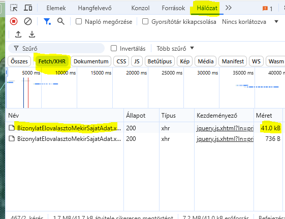
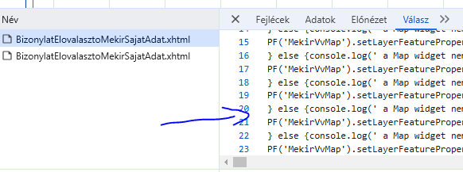
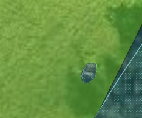

F12 gombot megnyomva a fejlesztői eszközöket kapcsoljuk be. Így láthatóvá válik minden adat amit a távoli szerver elküld a böngészőnek.
Ha nem lenne meg elsőre az adat akkor frissítsük az oldalt, aztán a Hálózat (Network) fült válasszuk ki madj szűrjük le:

Keressük meg a "BizonylatElovalasztoMekirSajatAdat" majd annak a komplett válaszát másoljuk ki.

Azt nem tudom, hogy gyakorlati haszna lesz-e ennek. Arra bizonyosan jó, hogy egy vadidegen odataláljon a területhez.
A villanyoszlopokat egyelőre figyelmen kívül hagyjuk. (Multi KML-ként be lehetne ezeket is importálni, de szerintem nem lesz elég pontos.)

Ha ez megvan akkor ide illesszük be:
->
Várj picit majd:
Tájékozódáshoz, nem biztos, hogy ugyan úgy mutatja mint Google Earth
(Ez utóbbi sajnos lehet csak az első 10 fájlt fogja letölteni :( )